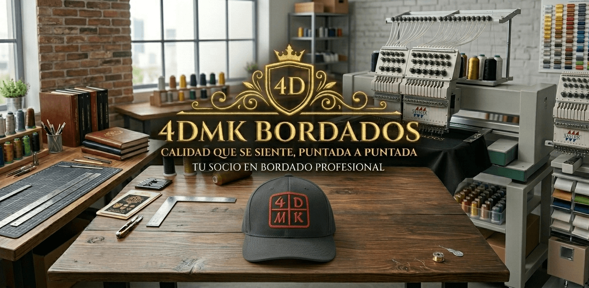
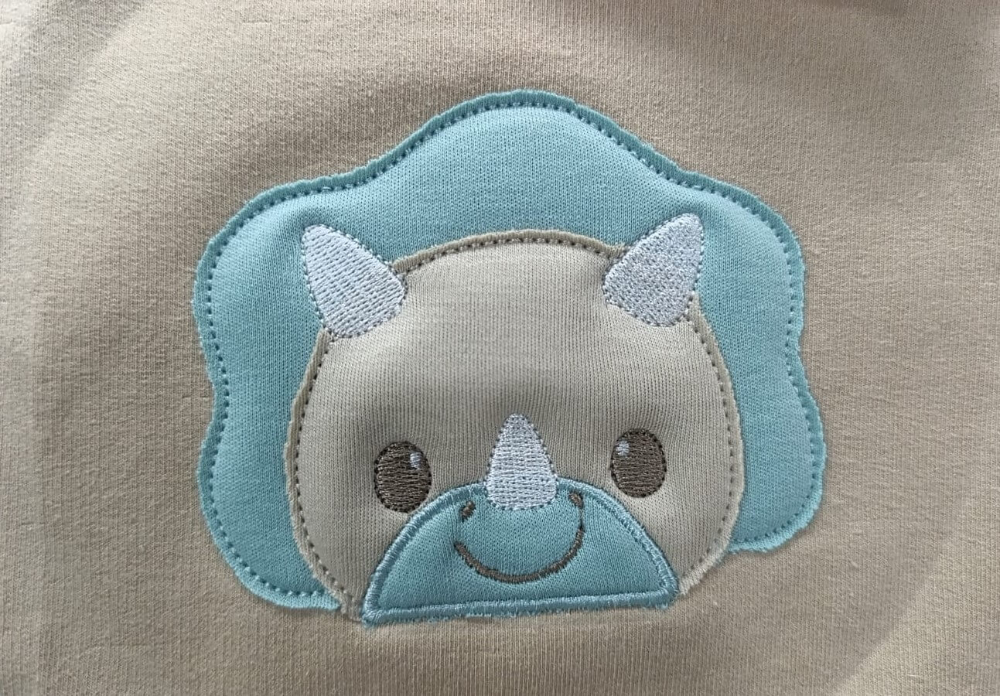
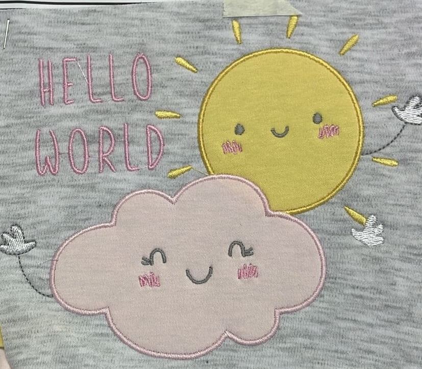
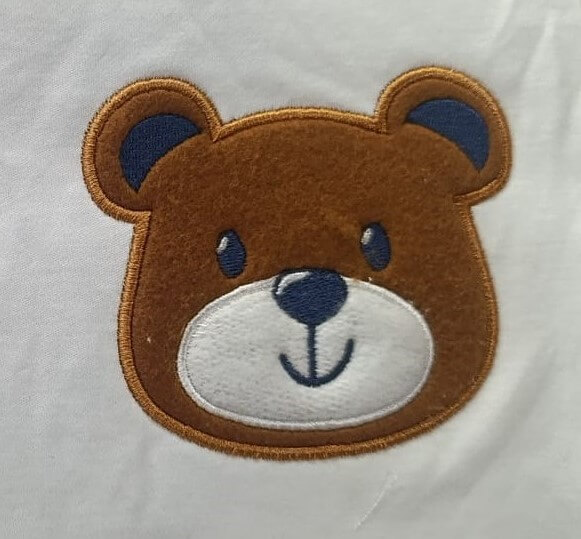

Bordado computarizado y personalización textil
En 4DMK personalizamos prendas con bordados computarizados para colegios, empresas, emprendimientos y clientes particulares. Dale más identidad, presencia y estilo a cada prenda.
Logos, nombres, escudos, uniformes y prendas especiales.
Conócenos

4DMK es una microempresa familiar ubicada en Villa El Salvador, dedicada a la comercialización de prendas y al servicio de bordado computarizado.
Su trabajo se enfoca en ofrecer acabados personalizados, resistentes y de buena presentación, adaptándose a las necesidades de colegios, empresas, negocios y clientes particulares.
Lo que ofrecemos
Realizamos bordados precisos para logos, nombres, escudos y diseños personalizados.
Personalizamos polos para negocios, eventos, promociones y uso personal.
Bordamos logos para empresas, emprendimientos y marcas que desean una mejor presentación.
Realizamos bordados de escudos, nombres y distintivos escolares.
Trabajamos prendas para equipos, negocios, instituciones y grupos organizados.
Ofrecemos prendas personalizadas listas para uso comercial, escolar o empresarial.
Confianza y calidad
Puedes comunicarte fácilmente por WhatsApp para enviar tu idea, diseño, logo o consulta.
Adaptamos cada bordado según el estilo, tamaño y necesidad del cliente.
Buscamos que cada prenda tenga una buena presentación y un acabado duradero.
Recibe orientación sobre precios, cantidades, tiempos y opciones disponibles.
Trabajos realizados

Diseños adaptados al cliente

Acabados resistentes y detallados

Ideal para empresas y colegios
En 4DMK cuidamos cada detalle para que tus prendas tengan una presentación única, resistente y llamativa.
Acabados cuidados en cada trabajo.
Comunicación sencilla por WhatsApp.
Pedidos según acuerdo con el cliente.
¿Cómo hacer un pedido?
Completa el formulario de cotización y genera tu PDF con los datos del pedido.
El sistema genera un documento ordenado con toda la información ingresada.
Adjunta el PDF en el chat de WhatsApp de 4DMK para que puedan revisarlo.
4DMK revisa el pedido, el diseño, la cantidad y los detalles solicitados.
Se define la cotización, el tiempo aproximado y la entrega según coordinación.
Resolvemos tus dudas
Sí. Puedes enviar tu logo, escudo, nombre, imagen o idea por WhatsApp para revisar si puede adaptarse al bordado.
Sí. 4DMK trabaja con prendas para colegios, empresas, emprendimientos, negocios y clientes particulares.
Puedes presionar el botón de cotización, llenar el formulario, descargar tu PDF y luego enviarlo por WhatsApp a 4DMK.
No. La página genera y descarga el PDF. Luego debes adjuntarlo manualmente en el chat de WhatsApp para finalizar la solicitud.
4DMK se ubica en Villa El Salvador, Lima - Perú. La atención y coordinación de pedidos se realiza principalmente por WhatsApp.
Completa tu solicitud y genera un PDF ordenado para enviarlo a 4DMK.
Generar cotizaciónContáctanos
Genera tu solicitud de cotización en PDF y envíala por WhatsApp a 4DMK para recibir una atención más rápida y ordenada.
Bordados computarizados y prendas personalizadas.
Atención para colegios, empresas, negocios y clientes particulares.